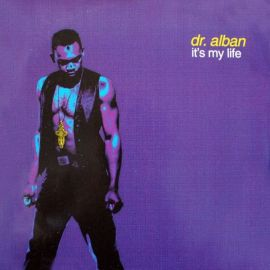
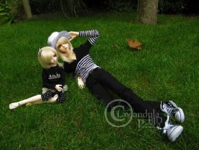
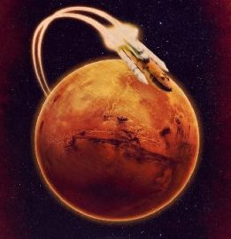
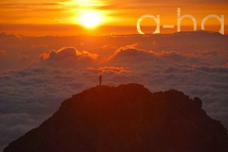
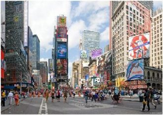

Я - одинокий человек,И я гуляю сам с собой,Ведь у меня нет друзейИ не было никогда!
[Verse 1] My life is a movie and everyone's watching. So let's get to the good part and past all the nonsense.

It's my life, take it or leave it, set me freeWhat's that crap papa, know it all?I got my own life, you got your own life
הקינדרלך - שלום עליכם, מלאכי השלום, מלאכי עליון.מי מלך מלכי המלכים הקדוש ברוך הוא .עידן -
WHISPERS:Shalom Asalaam
Πήγα στο θεό μια νύχτα τύφλα στο ποτόΚαι με δάκρυα στα μάτια του'πα τό και τοΤου'πα ότι με σκοτώνει που δεν μ'αγαπάς
Έπαιρνες ότι έδινακι εγώ τα μάτια έκλεινακαι μόνο από τα λόγια σουείχα χορτάσειπόσο με τλαιπώρησεςκι όμως αδιαφόρησες
Όταν νυχτώνει και νιώθεις μόνηθα είμαι εκείΝα μη σε νοιάζει, όταν βραδιάζειθα είμαι εκείΜες στο μυαλό σου, χάδι δικό σουγια μια ζωή

Там, где магнитные поляГде лиловая земляЯ летаю (я летаю)Там бьет в глаза небесный светНереальный свет планетЯ мечтаю (я мечтаю)
Tonight the world will sleepBut hunger will not wait For promises we made We share one soul We share one land
I dream for a dayWhen there’ll beNo more misery
There's a moon over Bourbon Street tonightI see faces as they pass beneath the pale lamplightI've no choice but to follow that call
You can try turn off the sunI'm still going to shine away, yeahand tell everyonewe're having some fun today

Солнце встаёт,(солнце)Небо поёт,(небо)Слушает регги народ (еее)

Summer moved onAnd the way it goesYou can't tag along
Honey moved outAnd the way it wentLeaves no doubt

I don't drink coffee I take tea my dearI like my toast done on one sideAnd you can hear it in my accent when I talkI'm an Englishman in New York
The city feels clean this time of night.
Just empty streets and me walking home to clear my head.
No it came this moon so bright.
[Sia]I was born in a thunderstormI grew up overnightI played aloneI'm playing on my ownI survivedHey
Hey, once upon a younger yearWhen all our shadows disappearedThe animals inside came out to playHey, when face to face with all our fears
Tricky time never slows That moment walked me by without bothering to say Lucky time never stops That moment walked me by without bothering to